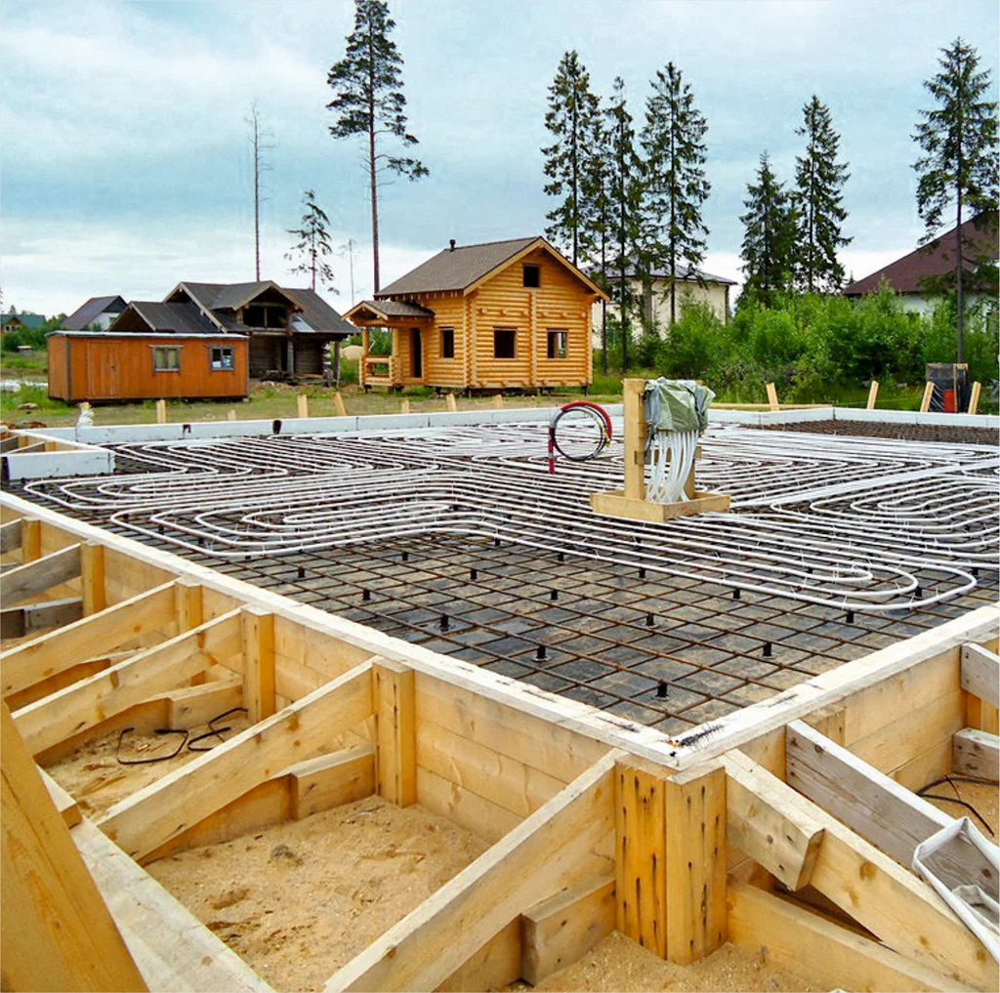
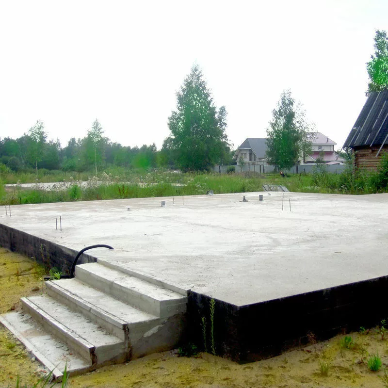
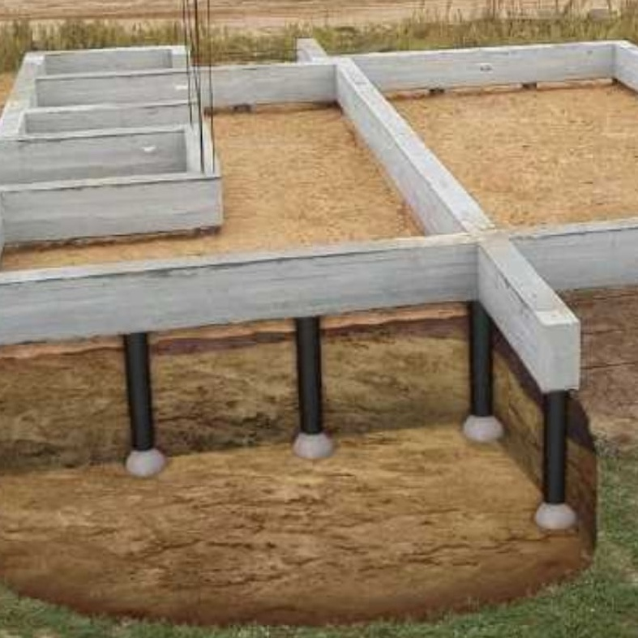
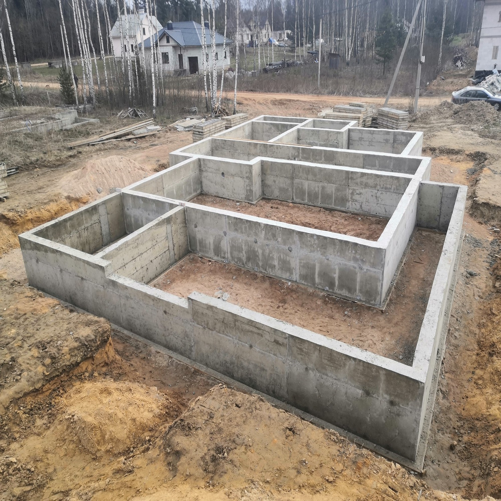

ФУНДАМЕНТ ПОД КЛЮЧ В ВОРОНЕЖЕ




Одним из основных этапов строительства здания любого назначения
является возведение правильного фундамента. Данная работа
считается весьма сложным ответственным процессом, требующим от
мастеров серьезных практических умений, специальных технических
знаний и огромного опыта. Занимающиеся этим делом специалисты
должны иметь знания о том, как правильно рассчитать нагрузку на
объект и понимать все геологические особенности почвы. От
надежности фундамента будет напрямую зависеть качество и
долговечность всей постройки. Поэтому большинство современных
людей стараются заказать услуги по возведению фундамента под ключ
в надежной специализированной компании. Высокое качество по
выгодным ценам! На протяжении вот уже многих лет активной
деятельности, специалисты нашей компании не перестают радовать
многочисленных заказчиков, оказывая услуги по возведению
фундамента под ключ в Воронеже высокого качества. Мы дорого ценим
доверие каждого клиента, поэтому готовы найти индивидуальный
подход даже к заказчику с самыми высокими требованиями.
Обратившись к нам, Вы можете заказать услуги по возведению
следующих видов фундамента: Монолитно - ленточный, который
представляет собой цельную железобетонную ленту, отливаемую за 1
раз и обладающую равномерными качествами по всей длине.
Буронабивной, который отличается отсутствием необходимости в
выравнивании основания и рытья котлована или траншеи. В штате
нашей команды работают высококвалифицированные специалисты с
серьезным опытом работы в данной сфере. Оказывая услуги по
возведению фундамента под ключ, они окажут профессиональную помощь
в выборе наиболее подходящего вида.
Расчёт фундамента за 30 минут, звоните:
+7(915)56-7777-1
+79805426594
Фундамент под ключ любой сложности!
Когда идет речь о заказе услуг по возведению
фундамента под ключ - это означает, что заказчику не
придется ни о чем беспокоиться. Наши специалисты сделают все сами:
от замеров, проектирования и составления документации до создания
котлована, заливки бетона и отмостки.
-
Данные услуги в нашей компании включают в себя следующие виды
работ:
- Выезд замерщика со всем необходимым оборудованием по указанному Вами адресу в любое удобное для заказчика время с целью снятия замеров участка.
- Помощь в выборе подходящего типа фундамента, подбор которого осуществляется нашими специалистами на основании исследований объекта, а не на простых догадках.
- Проектирование фундамента с указанием полной стоимости используемых материалов и выполненной работы. Устройство котлована, траншей и подушки.
После этого осуществляются опалубочные работы, укладка и обвязка
армирующих элементов, а также монтаж гидроизоляции. При оказании
услуг по возведению фундамента под ключ, мы гарантируем полное
соблюдение всех действующих нормативов и стандартов. Наши
специалисты всегда придерживаются актуальных технологий и самых
передовых методик. Это дает нам возможность давать гарантии, что
возведенная конструкция отвечает всем требованиям и легко пройдет
любую проверку.